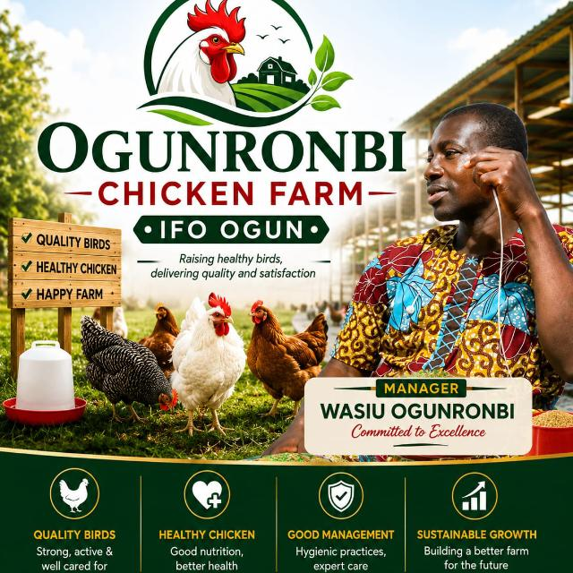

Healthy Chickens
Good nutrition and attentive care.
AGRICULTURE / IFO, OGUN STATE
Raising healthy birds, delivering quality and satisfaction. A family farming venture focused on careful management and sustainable growth.

OUR FARM
Based in Ifo, Ogun State, Ogunronbi Chicken Farm is managed by Wasiu Ogunronbi. Our priorities are healthy chickens, hygienic practices and building a farm that grows responsibly.
Good nutrition and attentive care.
Hygiene, consistency and responsible farm practices.
Building for the future with practical long-term thinking.
FARM MANAGEMENT
Farm Manager · Ifo, Ogun State, Nigeria
For farm enquiries, please contact the management team. Contact Wasiu Ogunronbi directly on WhatsApp: Chat on WhatsApp — +234 803 923 2934